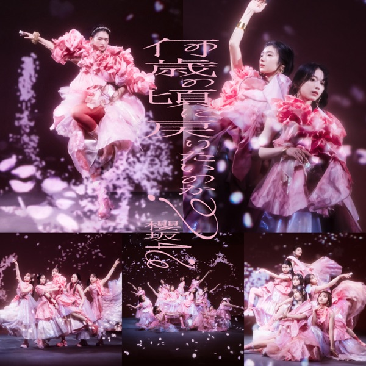

サカミチ
サカミチ泣かせて Hold me tight!なかせてほーるどみーたいと

初収録リリース「何歳の頃に戻りたいのか?」のジャケット
櫻坂46
発売日：2024-02-21
収録：何歳の頃に戻りたいのか?（8thSG）
種別：カップリング曲（選抜）
センター：山﨑天
作曲：TomoLow、温詞
編曲：TomoLow
ライブ披露：29件
フォーメーション
上が後列、下が前列です。色付きがセンター。（参考データに基づく）
 的野美青
的野美青 大園玲
大園玲 井上梨名
井上梨名 増本綺良
増本綺良 松田里奈
松田里奈 守屋麗奈
守屋麗奈 山下瞳月
山下瞳月 田村保乃
田村保乃 谷口愛季
谷口愛季 村井優
村井優 森田ひかる
森田ひかる 山﨑天
山﨑天 藤吉夏鈴
藤吉夏鈴参加メンバー（14名）
井上梨名、大園玲、田村保乃、藤吉夏鈴、増本綺良、松田里奈、森田ひかる、守屋麗奈、山﨑天、谷口愛季、中嶋優月、的野美青、村井優、山下瞳月
この曲が披露されたライブ（29件）
新しい順に20件まで表示しています（全29件）。
同じリリースの曲
何歳の頃に戻りたいのか？、何度 LOVE SONGの歌詞を読み返しただろう、油を注せ！、真夏に何か起きるのかしら、心の影絵、恋は向いてない、泣かせて Hold me tight!